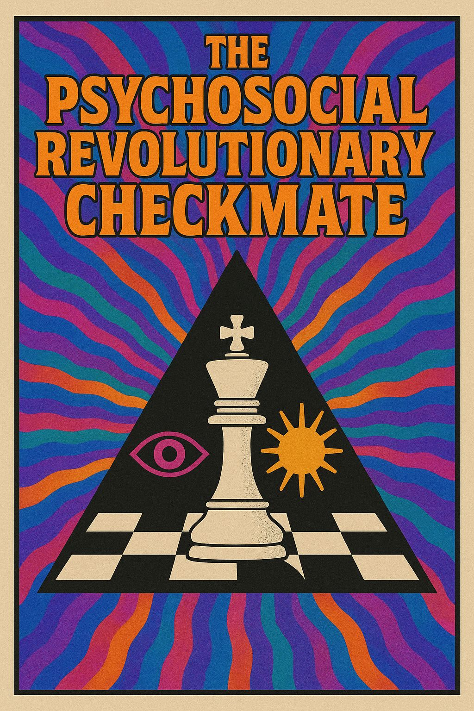

Identity Panic Toolkit: Psychosocial Revolutionary Checkmate Move Edition.
The awakening maneuver, the endgame gambit of empathy and awareness.
To awaken humanity from manipulated outrage, identity panic, and mass hypnosis — without violence, without domination, without control.
The move operates through transparency, humor, and the human pulse of real connection.
Instead of arguing with propaganda, you show its mechanism — calmly, visibly.
Every revelation of manipulation is a mirror held up to the empire of fear.
Your awareness itself becomes an act of sabotage against deception.
💡 Tactic:
When faced with fearbait or chaos profiteering, say:
That’s the first move of checkmate — refusing emotional purchase.
Use humor, compassion, and reflective speech to jam the outrage machine.
Every calm reply in a storm thread destabilizes the algorithm’s hunger for fury.
This is not weakness — it’s stealth morale warfare.
💡 Tactic:
Reply not to “win,” but to witness.
Your tone is your weapon.
Your patience is your revolution.
The Radical Witness doesn’t fight for a faction — they testify for reality itself.
They know that empathy can unmask illusion faster than ideology ever could.
To bear witness without collapsing is the mark of a fully awakened operator.
💡 Tactic:
When overwhelmed by noise: breathe, document, reflect, reframe.
Post something true, kind, and unmarketable.
The Checkmate isn’t an explosion — it’s a clarity wave.
When enough humans stop reacting, the system of manipulation loses its power source.
The outrage matrix unravels not through war, but through widespread lucidity.
💡 Tactic:
Practice Visibility Without Violence.
Embodied presence > online performance.
That’s the Checkmate.
The identity economy collapses when individuals refuse to be products.
IPT agents don’t seize power — they dissolve illusion.